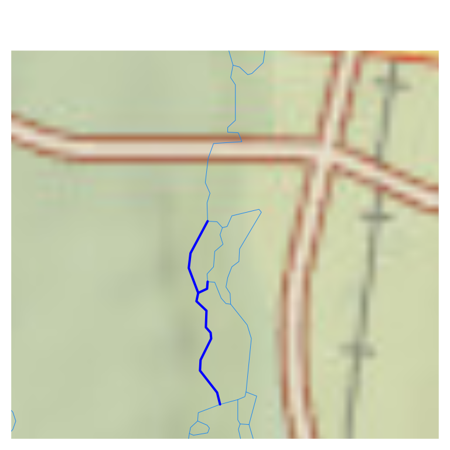
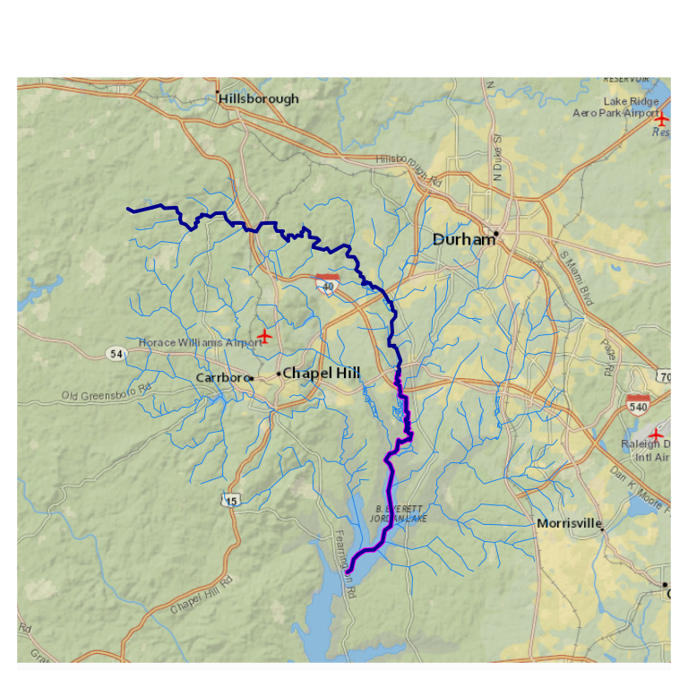

Network Navigation
dblodgett@usgs.gov
Source:vignettes/network_navigation.Rmd
network_navigation.RmdNetwork Navigation
One of the most common operations with hydrologic and hydrographic
networks is referred to as “navigation”. To “navigate” the network is
the action of traversing network connections according to a set of
rules. There four primary types of network navigation, two in the
upstream direction and two in the downstream direction and only along a
main path or including branches. In hydroloom, these
navigation types are referred to as upmain,
downmain, up and down. Additional
rules, such as a desired maximum distance, can be applied to any of the
four types.
Hydroloom has two functions that support network
navigation.
-
navigate_network_dfs(), requires the “flownetwork” representation of a hydrologic network (seeto_flownetwork()) and returns ids encountered along the requested navigation as a list of contiguous paths. -
navigate_hydro_network()currently (5/2024) requires the nhdplus representation of a hydrologic network (seevignette("advanced_network")) and returns ids encountered along the requested navigation as a single vector.
While similar, the two functions use completely different
implementations. navigate_network_dfs() uses a
graph-theoretic “depth first search” with upmain and
downmain attributes for all flownetwork connections.
navigate_hydro_network() relies on topo_sort,
levelpath, and other nhdplus attributes to support network
navigation.
For the rest of this vignette, we will use the new_hope sample dataset included with hydroloom. A map some basic summary information about the data are shown just below.
library(hydroloom)
library(sf)
hy_net <- sf::read_sf(system.file("extdata/new_hope.gpkg",
package = "hydroloom"))
nrow(hy_net)
#> [1] 746
class(hy_net)
#> [1] "sf" "tbl_df" "tbl" "data.frame"
names(hy_net)
#> [1] "COMID" "GNIS_ID" "GNIS_NAME" "LENGTHKM" "REACHCODE"
#> [6] "WBAREACOMI" "FTYPE" "FCODE" "StreamLeve" "StreamOrde"
#> [11] "StreamCalc" "FromNode" "ToNode" "Hydroseq" "LevelPathI"
#> [16] "Pathlength" "TerminalPa" "ArbolateSu" "Divergence" "StartFlag"
#> [21] "TerminalFl" "DnLevel" "UpLevelPat" "UpHydroseq" "DnLevelPat"
#> [26] "DnMinorHyd" "DnDrainCou" "DnHydroseq" "FromMeas" "ToMeas"
#> [31] "RtnDiv" "VPUIn" "VPUOut" "AreaSqKM" "TotDASqKM"
#> [36] "geom"
class(hy(hy_net, clean = TRUE))
#> [1] "hy" "tbl_df" "tbl" "data.frame"
names(hy(hy_net, clean = TRUE))
#> [1] "id" "length_km"
#> [3] "aggregate_id" "wbid"
#> [5] "feature_type" "feature_type_code"
#> [7] "stream_level" "stream_order"
#> [9] "stream_calculator" "fromnode"
#> [11] "tonode" "topo_sort"
#> [13] "levelpath" "pathlength_km"
#> [15] "terminal_topo_sort" "arbolate_sum"
#> [17] "divergence" "start_flag"
#> [19] "terminal_flag" "dn_stream_level"
#> [21] "up_levelpath" "up_topo_sort"
#> [23] "dn_levelpath" "dn_minor_topo_sort"
#> [25] "dn_topo_sort" "aggregate_id_from_measure"
#> [27] "aggregate_id_to_measure" "da_sqkm"
#> [29] "total_da_sqkm"
# map utilities
map_prep <- \(x, tol = 100) sf::st_geometry(x) |> # no attributes
sf::st_transform(3857) |> # basemap projection
sf::st_simplify(dTolerance = tol) # sleaner rendering
pc <- list(flowline = list(col = NA)) # to hide flowlines in basemap
oldpar <- par(mar = c(0, 0, 0, 0)) # par is reset in cleanup
nhdplusTools::plot_nhdplus(bbox = sf::st_bbox(hy_net), plot_config = pc)
#> Spherical geometry (s2) switched off
#> although coordinates are longitude/latitude, st_intersects assumes that they
#> are planar
#> Spherical geometry (s2) switched on
#> Zoom set to: 11
plot(map_prep(hy_net), col = "blue", add = TRUE)NHDPlus-based network navigation.
The nhdplus data model has network attributes, like
levelpath that provide a shortcut to “main” navigations. A
path of flowlines that flow from a most upstream headwater to the outlet
of a given levelpath in the network have the same
levelpath id. Additionally, every feature has a
up_levelpath and dn_levelpath indicating the
levelpath of the flowline upstream and downstream along the
“main” path respectively. These attributes, combined with relatively
simple table operations, enable navigation up and down stream along the
network. While levelpath attributes are the key to the
algorithm, topo_sort, dn_toposort,
dn_mino_hydro, length_km, and
pathlength_km are also used to accomplish aspects of the
algorithm implemented innavigate_hydro_network().
When working with data that uses the nhdplus data model,
navigate_hydro_network() works with no pre-processing.
Below, all network navigation modes are demonstrated using the sample
data as is from NHDPlusV2.
First, we can extract some key features that will help illustrate the network navigation functionality. In line comments illustrate what is being done.
# work in hydroloom attribute names for demo sake
hy_net <- hy(hy_net)
# the smallest topo_sort is the most downstream
outlet <- hy_net[hy_net$topo_sort == min(hy_net$topo_sort), ]
# features with the levelpath of the outlet are the mainpath,
# or mainstem of the network
main_path <- hy_net[hy_net$levelpath == outlet$levelpath, ]
# the largest topo sort along the main path is its headwater flowline
headwater <- main_path[main_path$topo_sort == max(main_path$topo_sort), ]
# basemap
par(mar = c(0, 0, 0, 0))
nhdplusTools::plot_nhdplus(bbox = sf::st_bbox(hy_net), plot_config = pc)
#> Zoom set to: 11
# plot the elements prepped above
plot(map_prep(hy_net), col = "dodgerblue2", add = TRUE, lwd = 0.5)
plot(map_prep(outlet), col = "magenta", add = TRUE, lwd = 4)
plot(map_prep(headwater), col = "magenta", add = TRUE, lwd = 4)
plot(map_prep(main_path), col = "darkblue", add = TRUE, lwd = 1.5)
We can reproduce the path extracted above with a network navigation,
which is a more natural approach for most applications. Below, we see
how to use navigate_hydro_network from a starting location and use the
distance parameter to limit how far we will navigate from
the start point.
# this is just the ids
path <- navigate_hydro_network(hy_net,
start = outlet$id,
mode = "UM")
# filter the source data to get the id's representation
path <- hy_net[hy_net$id %in% path, ]
# pathlength_km is the distance from the furthest downstream network outlet
# it is used within navigate_hydro_network to filter to a given distance.
pathlength <- max(path$pathlength_km) - min(path$pathlength_km)
half_path <- navigate_hydro_network(hy_net,
start = outlet$id,
mode = "UM",
distance = pathlength / 2)
half_path <- hy_net[hy_net$id %in% half_path, ]
par(mar = c(0, 0, 0, 0))
nhdplusTools::plot_nhdplus(bbox = sf::st_bbox(hy_net), plot_config = pc)
#> Zoom set to: 11
plot(map_prep(hy_net), col = "dodgerblue2", add = TRUE, lwd = 0.5)
plot(map_prep(half_path), col = "magenta", add = TRUE, lwd = 3)
plot(map_prep(path), col = "darkblue", add = TRUE, lwd = 2)Now we can look at the more complete up and down navigation. Sometimes these are called “upstream with tributaries” and “downstream with diversions” or “UT” and “DD”. For demonstration sake, we will start at the top of the half path found above. More typically, this would be starting from a known location, such as where a gage site is located.
start <- half_path[half_path$topo_sort == max(half_path$topo_sort), ]
up <- navigate_hydro_network(hy_net,
start = start$id,
mode = "UT")
up <- hy_net[hy_net$id %in% up, ]
down <- navigate_hydro_network(hy_net,
start = start$id,
mode = "DD")
down <- hy_net[hy_net$id %in% down, ]
par(mar = c(0, 0, 0, 0))
nhdplusTools::plot_nhdplus(bbox = sf::st_bbox(hy_net), plot_config = pc)
#> Zoom set to: 11
plot(map_prep(hy_net), col = "dodgerblue2", add = TRUE, lwd = 0.5)
plot(map_prep(start), col = "magenta", add = TRUE, lwd = 4)
plot(map_prep(up), col = "darkblue", add = TRUE, lwd = 2)
plot(map_prep(down), col = "blue", add = TRUE, lwd = 2) With the above, assuming nhdplus attributes are available, a wide range
of network navigation applications are possible. However, the sweet of
nhdplus attributes are not always available. When this is the case,
With the above, assuming nhdplus attributes are available, a wide range
of network navigation applications are possible. However, the sweet of
nhdplus attributes are not always available. When this is the case,
navigate_network_dfs() is useful.
flownetwork-based navigation
In contrast with navigate_hydro_network(),
navigate_network_dfs() can perform up and
down navigation with only a network topology described as
id and toid. If upmain and
downmain attributes are also available, it can also perform
main path navigation.
First, it’s worth reviewing the definition of “upmain” and “downmain” in the context of the flow network.
hydroloom_name_definitions[names(hydroloom_name_definitions) == "upmain"]
#> upmain
#> "indicates that a given network element is the primary upstream connection at a confluence"
hydroloom_name_definitions[names(hydroloom_name_definitions) == "downmain"]
#> downmain
#> "indicates that a given network element is the primary downstream connection at a confluence"Using these definitions, we can add to the non-dendritic network
example in vignette("hydroloom") by defining “upmain” and
“downmain” attributes on it. In this simple network, we have one
divergence and one confluence. Notice that where id 1
appears twice, it has one and only one downmain TRUE (4) and where
toid 5 appears twice, it has one and only one upmain TRUE
(4).

| id | toid | upmain | downmain |
|---|---|---|---|
| 1 | 2 | TRUE | FALSE |
| 1 | 4 | TRUE | TRUE |
| 2 | 3 | TRUE | TRUE |
| 3 | 5 | FALSE | TRUE |
| 4 | 5 | TRUE | TRUE |
| 5 | 0 | TRUE | TRUE |
Hydroloom provides utilities to construct this
lightweight flownetwork format from a geometric network in
make_attribute_topology(). upmain and
downmain attributes can be constructed using
add_divergence(), add_levelpaths(), and
to_flownetwork. In this demonstration, we have
divergence and levelpath attributes already,
but reconstructing them is shown below.
# select only id, name, feature_type.
# Note that the geometry is "sticky" and is included in base_net
base_net <- dplyr::select(hy_net, id, GNIS_NAME, feature_type)
# create a geometric network -- this includes divergences
base_net <- dplyr::left_join(make_attribute_topology(base_net, min_distance = 10),
dplyr::select(base_net, id), by = "id") |>
sf::st_sf()
#> Loading required namespace: future
#> Loading required namespace: future.apply
names(base_net)
#> [1] "id" "GNIS_NAME" "feature_type" "toid" "geom"
nrow(base_net)
#> [1] 832
# now switch from a flownetwork topology to a node topology.
base_net <- hydroloom::make_node_topology(base_net, add_div = TRUE, add = TRUE)
names(base_net)
#> [1] "id" "fromnode" "tonode" "GNIS_NAME" "feature_type"
#> [6] "geom"
nrow(base_net)
#> [1] 746
# divergence determination needs a dominant feature type input
unique(base_net$feature_type)
#> [1] "StreamRiver" "Connector" "ArtificialPath"
base_net <- add_divergence(base_net,
coastal_outlet_ids = outlet$id,
inland_outlet_ids = c(),
name_attr = "GNIS_NAME",
type_attr = "feature_type",
major_types = "StreamRiver")
names(base_net)
#> [1] "id" "fromnode" "tonode" "GNIS_NAME" "feature_type"
#> [6] "geom" "divergence"
nrow(base_net)
#> [1] 746
# now we can add a dendritic toid attribute because we have "divergence"
base_net <- add_toids(base_net, return_dendritic = TRUE)
# note that no rows were added -- these are only downmain!
nrow(base_net)
#> [1] 746
# now add a length attribute as the accumulated flowline length.
base_net$length_km <- as.numeric(st_length(base_net) / 1000)
base_net$weight <- accumulate_downstream(base_net, "length_km")
base_net <- add_levelpaths(base_net,
name_attribute = "GNIS_NAME",
weight_attribute = "weight")
names(base_net)
#> [1] "id" "toid" "levelpath_outlet_id"
#> [4] "topo_sort" "levelpath" "geom"
#> [7] "tonode" "GNIS_NAME" "feature_type"
#> [10] "divergence" "fromnode" "length_km"
#> [13] "weight"
#remove dendritic toid used above
base_net <- dplyr::select(base_net, -toid)
flow_net <- to_flownetwork(base_net)
nrow(flow_net)
#> [1] 832
names(flow_net)
#> [1] "id" "toid" "upmain" "downmain"With the above, we have a flow network. The above demonstration wasn’t strictly necessary given that the demo NHDPlus data has all the attributes we need to construct a flow network. However, the demonstration shows how the NHDPlus attributes relate to the more direct and lightweight flownetwork attributes. Note that while the hydroloom methods are nearly identical to those of NHDPlus, there are some very minor differences, as shown below, nearly all the upmain and dowmain connections are the same, but differences can occur.
Comparing the two results, we see that only one junction has a different upmain attribute. Inspection shows that the difference is due to dendritic accumulation (divergences get 0% of the upstream value) of flowline length in hydroloom vs un-apportioned accumulation (divergences get 100% of the upstream value) in NHDPlus when calculating weights for the divergence attribute and is negligible.
flow_net_nhdplus <- to_flownetwork(hy_net) |>
dplyr::arrange(id, toid)
flow_net_hydroloom <- to_flownetwork(base_net) |>
dplyr::arrange(id, toid)
different_downmain <- flow_net_nhdplus[flow_net_nhdplus$downmain != flow_net_hydroloom$downmain,]
different_downmain
#> # A tibble: 1 × 4
#> id toid upmain downmain
#> <int> <dbl> <lgl> <lgl>
#> 1 NA NA NA NA
different_upmain <- flow_net_nhdplus[flow_net_nhdplus$upmain != flow_net_hydroloom$upmain,]
different_upmain
#> # A tibble: 3 × 4
#> id toid upmain downmain
#> <int> <dbl> <lgl> <lgl>
#> 1 8893470 8893552 TRUE TRUE
#> 2 8893472 8893552 FALSE TRUE
#> 3 NA NA NA NA
different_upmain <- hy_net[hy_net$id %in% c(different_upmain$id, different_upmain$toid), ]
par(mar = c(0, 0, 0, 0))
nhdplusTools::plot_nhdplus(bbox = sf::st_bbox(different_upmain), plot_config = pc)
#> Spherical geometry (s2) switched off
#> although coordinates are longitude/latitude, st_intersects assumes that they
#> are planar
#> Spherical geometry (s2) switched on
#> Zoom set to: 12
plot(map_prep(hy_net, 10), col = "dodgerblue2", add = TRUE, lwd = 0.5)
plot(map_prep(different_upmain, 10), col = "blue", add = TRUE, lwd = 2)
Now that we have a flownetwork, we can perform the same navigations as were conducted earlier only this time, with only the basic network, not including the NHDPlus attributes.
# this is just the ids
path <- navigate_network_dfs(flow_net,
starts = outlet$id,
direction = "upmain")
# filter the source data to get the id's representation
path <- hy_net[hy_net$id %in% unlist(path), ]
# distance not yet supported
half_path <- navigate_network_dfs(flow_net,
starts = 8893396, # chosen from a map
direction = "downmain")
half_path <- hy_net[hy_net$id %in% unlist(half_path), ]
par(mar = c(0, 0, 0, 0))
nhdplusTools::plot_nhdplus(bbox = sf::st_bbox(hy_net), plot_config = pc)
#> Zoom set to: 11
plot(map_prep(hy_net), col = "dodgerblue2", add = TRUE, lwd = 0.5)
plot(map_prep(half_path), col = "magenta", add = TRUE, lwd = 3)
plot(map_prep(path), col = "darkblue", add = TRUE, lwd = 2) Now we can look at the more complete up and down navigation. Sometimes these are called “upstream with tributaries” and “downstream with diversions” or “UT” and “DD”. For demonstration sake, we will start at the top of the half path found above. More typically, this would be starting from a known location, such as where a gage site is located.
# chosen from map
start <- hy_net[hy_net$id == 8893396, ]
up <- navigate_network_dfs(flow_net,
starts = start$id,
direction = "up")
up <- hy_net[hy_net$id %in% unlist(up), ]
down <- navigate_network_dfs(flow_net,
starts = start$id,
direction = "down")
down <- hy_net[hy_net$id %in% unlist(down), ]
par(mar = c(0, 0, 0, 0))
nhdplusTools::plot_nhdplus(bbox = sf::st_bbox(hy_net), plot_config = pc)
#> Zoom set to: 11
plot(map_prep(hy_net), col = "dodgerblue2", add = TRUE, lwd = 0.5)
plot(map_prep(start), col = "magenta", add = TRUE, lwd = 4)
plot(map_prep(up), col = "darkblue", add = TRUE, lwd = 2)
plot(map_prep(down), col = "blue", add = TRUE, lwd = 2)